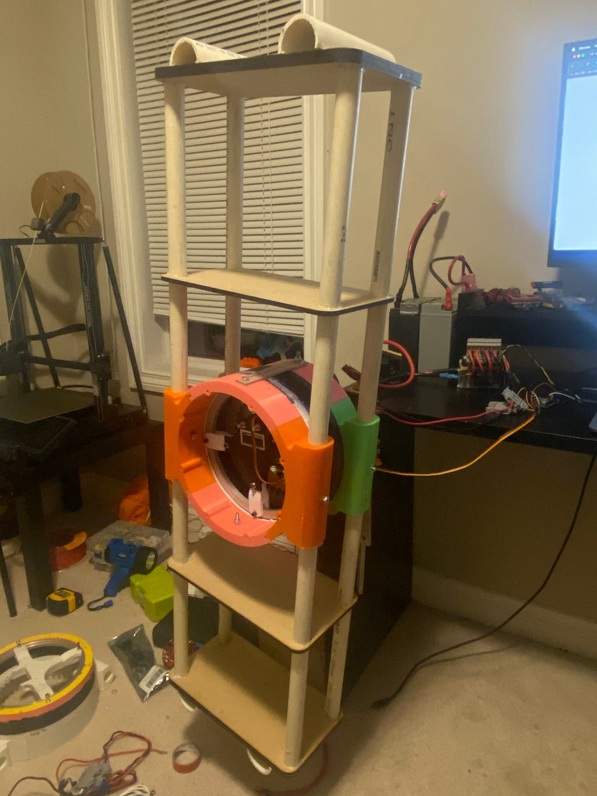
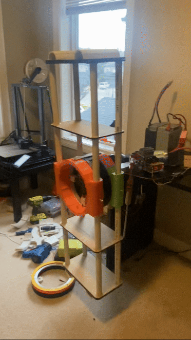
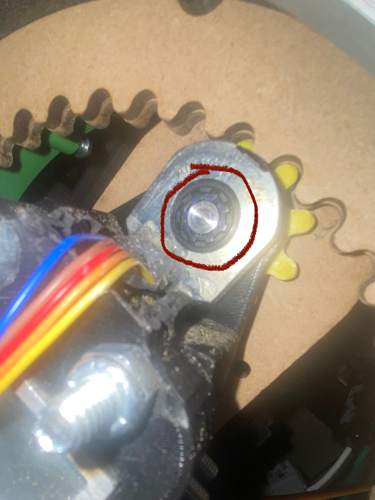

Aug 2024
Progress on my version of TARS…
Hey… before you read my dope article, I recommend you to read this also very awesome article so you get some context. 😎
Current progress: The entire first leg is assembled and all the electronics for it are connected. I got the PID working on this leg and can control the angle. I am using an Ardunio UNO as the micro controler for this robot. The second leg is being made as I write this… the plan is to create two legs. That way I have half of the robot and that is enough to emulate the correct motions, so I can get quick proof of concept.
Here are some pics of the one leg:

Heres a clip of the leg’s PID at work with the setpoint at 270 degrees:

Code
Heres a look at the code I used to make that clip happen:
#include <Servo.h>
#include <QuadratureEncoder.h>
#include <PID_v1.h>
// MOTOR
int motorPin = 3; // the signal output pin
Servo motor1;
int PWMvalue;
// ENCODER
long gearRatio = 4;
long encoderDiscretePositions = 8192;
long oneTurn = encoderDiscretePositions * gearRatio;
long angleMultiplier = oneTurn / 360;
Encoders encoder(11, 12);
// PID
double kp = 4, ki = 2, kd = 1;
double input = 0, output = 0, setpoint = 0;
PID myPID(&input, &output, &setpoint, kp, ki, kd, DIRECT);
void setup() {
// MOTOR
motor1.attach(motorPin); // attach servo with min and max pulse widths
Serial.begin(9600);
// PID
setpoint = 270; // in degrees
myPID.SetMode(AUTOMATIC); // set PID in Auto mode
myPID.SetSampleTime(100); // refresh rate of PID controller (in milliseconds)
myPID.SetOutputLimits(1000, 2000); // Output range for the servo motor
//myPID.SetTunings(kp,ki,kd);
delay(5000); //gives me time to get out of the way of the leg and have my hand over the kill switch :(
}
void loop() {
// ENCODER
long currentEncoderCount = encoder.getEncoderCount();
long angle = currentEncoderCount / angleMultiplier;
// Serial.print("angle: ");
// Serial.println(angle);
Serial.print("Input: ");
Serial.println(input);
// Serial.print("Error: ");
// Serial.println(setpoint - input);
// if (abs(currentEncoderCount) > oneTurn) {
// encoder.setEncoderCount(0);
// // Serial.println("One Rotation");
// }
// if ((setpoint - abs(input)) < 0){
// myPID.SetOutputLimits(1500, 2000); // Output range for the servo motor
// }
// if ((setpoint - abs(input)) > 0){
// myPID.SetOutputLimits(1000, 1500); // Output range for the servo motor
// }
// PID
input = -angle;
myPID.Compute(); // compute the PID output
Serial.print("Output: ");
Serial.println(output);
// PWMvalue = output * 5 + 1500; //scale up to 1000-2000
// Serial.print("pwm");
//Serial.println(output);
motor1.writeMicroseconds(output);
}
Issues I encountered and fixes:
1. Encoder and Motor Shaft:
Something that was almost a constant hassle was the encoder constantly disengaging with the motor shaft. This caused a ton of issues, especially during PID testing. Whilst the motor was spinning, it would disengage, causing the error to be very large, such that the leg would eventually reach very fast speeds and parts would fly off. For some context:

The part that would constantly disengage was that little black part between the motor shaft and the encoder's slot. The part was a motor shaft sleeve with the purpose of allowing the motor shaft to engage tightly with the encoder. The issue was that it would slide back on the motor shaft.
FIX:
The fix was two things, The first was an adhesive. Hot glue didn’t work because it would melt when the motor started to heat up, so I got some heat-resistant adhesives. The next thing was to add tape on the parts of the motor shaft that the sleeve was sliding back onto, that way the sleeve had nowhere to go.
2. PID Direction:
One of the primary issues I ran into while trying to get PID working was that the PID controller was just spinning at max speed in the same direction, not correcting for the setpoint. Tried a lot of different things, I came to the conclusion that the output from the PID controller causes the motor to spin in the wrong direction. This subsequently causes the error to increase, and for some reason the PID controller thinks that by going in the same direction will fix this. And as the error grew, the output grew, causing it to speed up real fast.
FIX:
My fix was really simple, I made it so that the input was -1*angle instead of just the angle (see the code earlier in the article), that way all the error calculations would be reversed. So instead of the error growing, it would get smaller.
Thanks for reading, you a real one. I’ll post my next article/ update when I get the second leg working :)